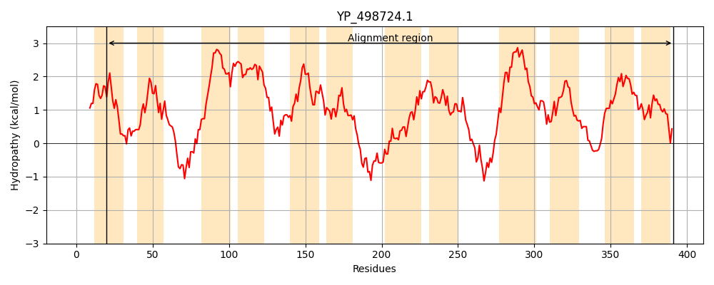
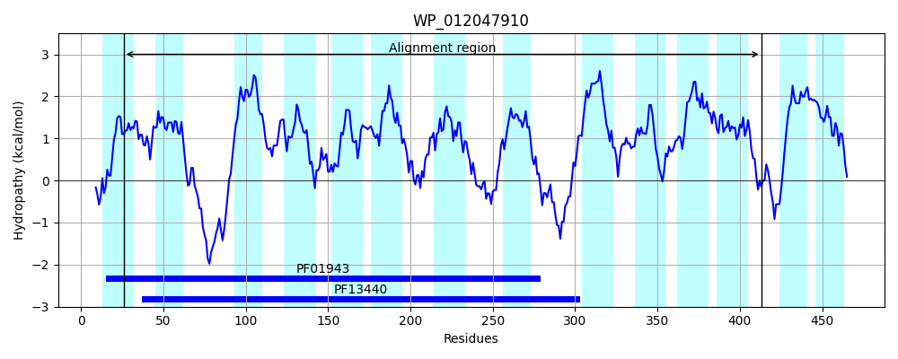
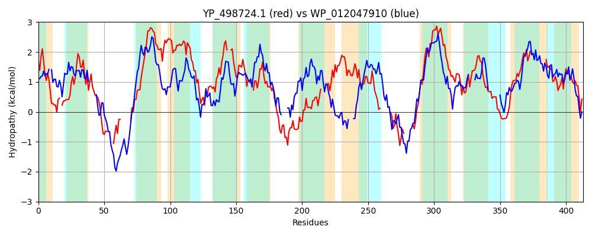

Hit Accession: WP_012047910
Hit TCID: 2.A.66.2.29
Hit Description: gnl|BL_ORD_ID|20804 gnl|TC-DB|WP_012047910.1|2.A.66.2.29 polysaccharide biosynthesis protein [Clostridium botulinum]
Mach Len: 413
e:0.000000
Query TMS Count : 12
Hit TMS Count: 14
TMS-Overlap Score: 7.200000
Predicted Substrates:None
BLAST Alignment:
Score: 143 , Bit scores: 59 bits, E-value: 9.3e-10, Alignment length: 413, Percentage identity: 23
Query: 20 IALGLQFLAYPIINQRV-GNEAFGSILTIYTIITITSVVLGNTLNNIRLINMN----LYKSNH-------YYWKFASILLISILIESIALIIVFLYFFNLNIIDIIFLILLNILMCLRIYLNVFFRMTLKYNQILYIALIQFLG--LLIGLFLYYLTQNWIV-CFITSELFATIYTLVKLRGLTIGEYQSEDNNVVKDYVMLLSTNSLNNLNLYL----DRLILLPIIGGTAVTISFLSTFIGKMLATFLYPINNVVLSY-------ISVNESDNIKK------QYLKTNLIAIAALCLVMIICYPITIIIVSLLYNIDSSLYSKFIILGNIGVLFNAVSIMIQTLNTKHASITLQANYMTLHTITFIFITILMTI---------AFGLNGFFWTTLFSNIIKYVILNIIGLK 391
IAL + FL I+N +V G E G + + I+ S N L +MN LYK Y F S+ ++SI + F + +I++ L+ I +++ +FR+ + +I I LI G LLI LF+ N ++ I IY ++ L I + + N++KD + + + NL Y+ DR+++L + + TF ++++ L I +++ Y +++NE+ N+KK +Y K + LC+V +I + IV Y ++Y + +G + + VS A++ + +N ++ I F+TI+++I F + G T+ +NII + +I LK
Sbjct: 26 IALVIGFLK-EIVNAKVLGPELLGVLGNLLLILNYLSYA-----NLGILYSMNREYILYKDKDERKARQVIYTSFTSLFILSIFFILCGFLSKLFIFKDATGEYLIYIFLIAIFQQFKMFFINYFRLVDNFTKINIIELINNAGTFLLIMLFIKNYKINAVLYSMIICGFITLIYGIINCEKLKI----NINYNILKDLIYVGIPLLIYNLGFYILTTVDRIMILKYLKYEELGYY---TFSNQIVSATLVFITSILFLYYPKAIKILNINENFNVKKVYNSIEKYTKYVELLGVLLCIVGVIFIKPFVNIVVPNYEASINIYRVLV----LGAIASQVSYF--------ANVFIVSNKKQMYLIFLQFLTIILSIILNYIFLKLGFKVMGVSIATMITNIIYSAMQYLIFLK 413 | Protein Hydropathy Plots: |
|---|
|  |  |
Pairwise Alignment-Hydropathy Plot:
|
|---|
|  |